Featured Projects
LLM and RAG products first, then the vision, IoT, and robotics projects I have shipped with the same team.
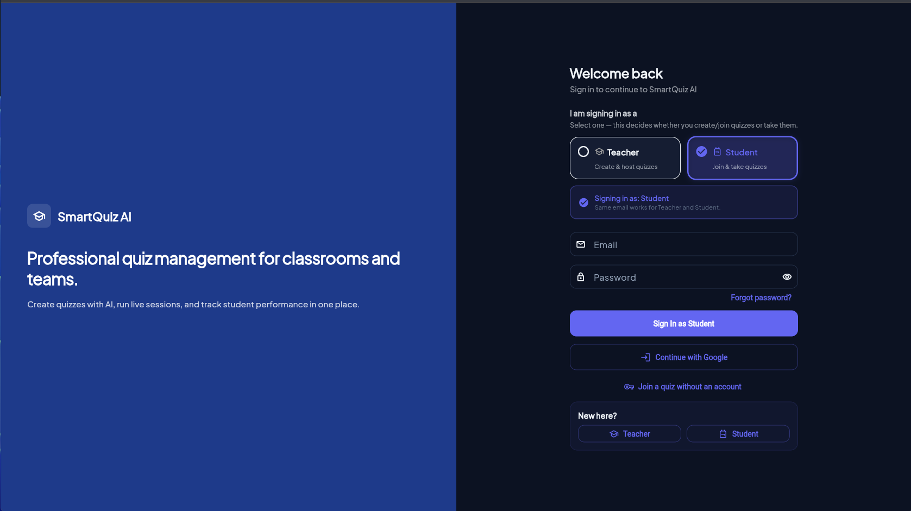
SmartQuiz AI
Live classroom quizzes. Teachers upload notes, students join with a code, and the leaderboard updates in class. Note text is chunked, embedded, and stored in ChromaDB. Questions are written from the passages that match the topic.

AI Meeting Assistant
Record the room. Whisper turns speech into a transcript, and a language model returns minutes, decisions, and action items as a PDF. Earlier meetings stay searchable for follow-up questions.
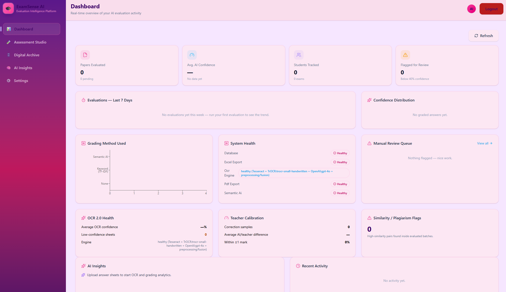
E-checking
Answer sheets are read as handwriting. Model answers sit in ChromaDB. The grader retrieves the marking scheme and scores the student text against it, then flags low-confidence papers for a teacher.
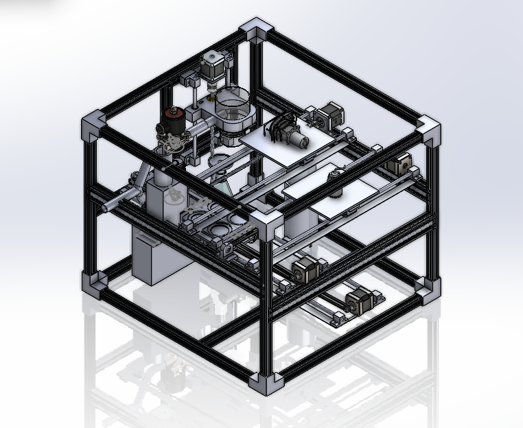
Automated Microbial Analysis
Motorised microscopic-camera rig for a Lacuna-funded dataset project. Stages, cameras, and capture software cut manual labelling and imaging effort by about half for colony and water-sample work.
Teacher Assistant
Lecture audio in. Structured study-note PDFs out, in English and Urdu. Later questions stay tied to that lecture through retrieval.
AI Smart Blackboard
One canvas for drawing, math recognition, graphs, 3D models, and a lecture PDF the class can take home.
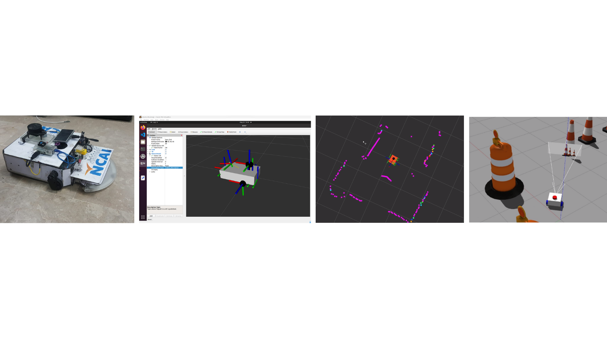
Autonomous Mobile Robot
Autonomous mobile vacuum robot for trash collection on Raspberry Pi and Arduino. LIDAR SLAM and ROS2 for mapping and obstacle avoidance, with OpenCV trash detection and Gazebo / RViz validation.
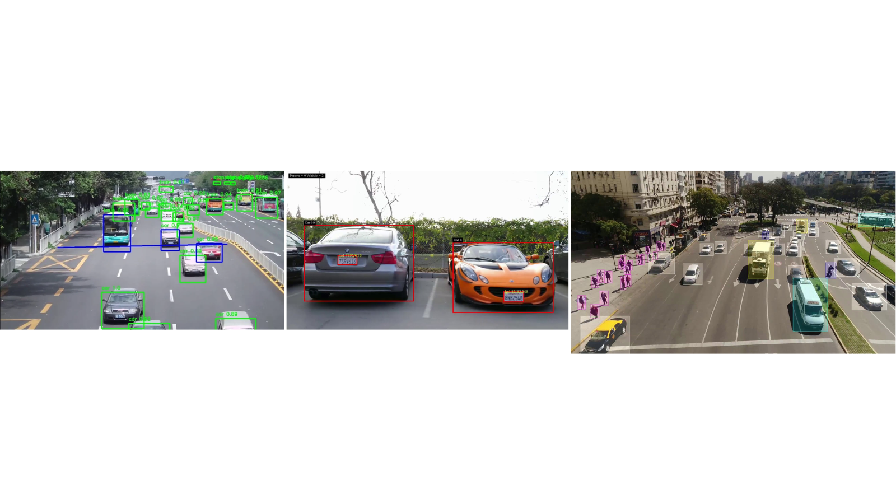
Road Management & Traffic Monitoring
Vehicle detection, classification, license plate recognition, and traffic analysis for Safe City work. CNN and YOLO models trained on curated urban video, with live dashboards.
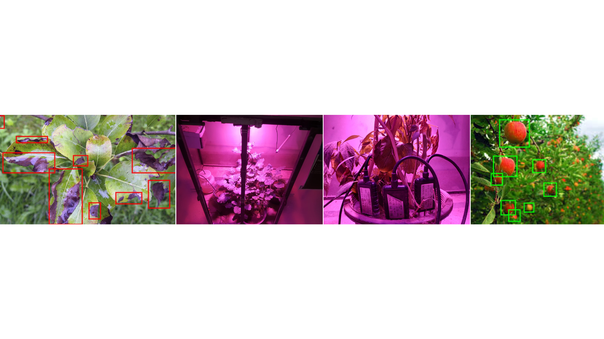
AI in Agriculture
Plant health, growth stage, and yield models across incubator, greenhouse, and open field. Sensor time series plus images, with CNNs for growth-stage and food-quality detection. Published at AIAI 2025.
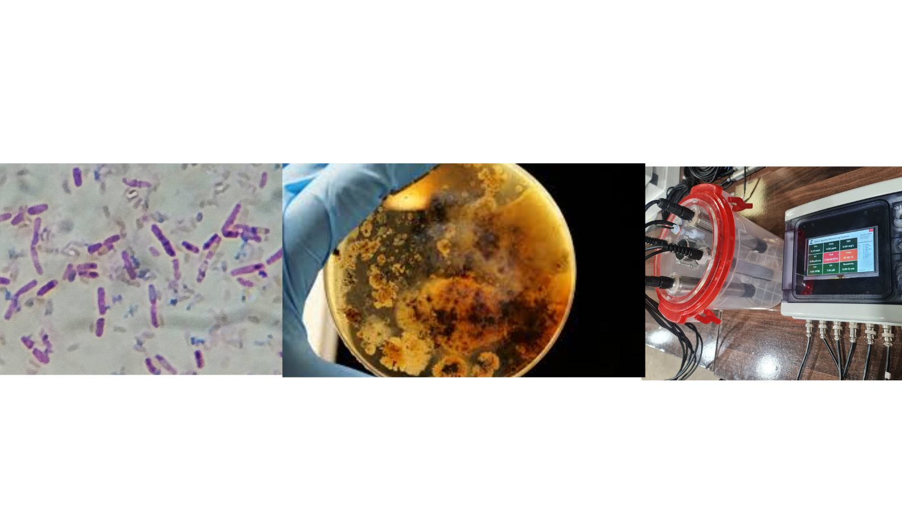
Water Quality Monitoring
Field computer-vision kit for rapid E. coli detection on drinking-water samples. Microscopy and YOLO counting, with chemical sensing, GPS, and cloud dashboards. Published in IJIST and IEEE ICET.

Face Recognition Attendance
Real-time face attendance for campus and office use, including the EduSecure dashboard: enrollment, verification, and logs with time and place.

Autonomous Vehicle 3D Detection
3D object detection on point clouds, with Pandaset converted toward KITTI and a comparison of PointRCNN, PV-RCNN, SECOND, and CenterPoint for vehicles and pedestrians.
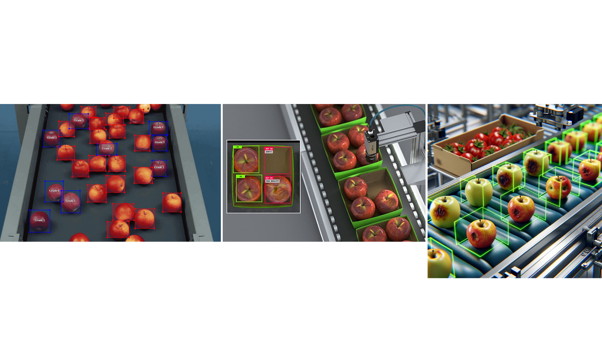
Fruit & Vegetable Sorting
CNN sorting for freshness, quality, and ripeness, aimed at cutting post-harvest waste. Related retail work includes the intelligent IoT weighing scale published in Applied Sciences.

Weapon Detection
YOLOv5 trained across weapon classes for surveillance video, with inference tuned for live monitoring.
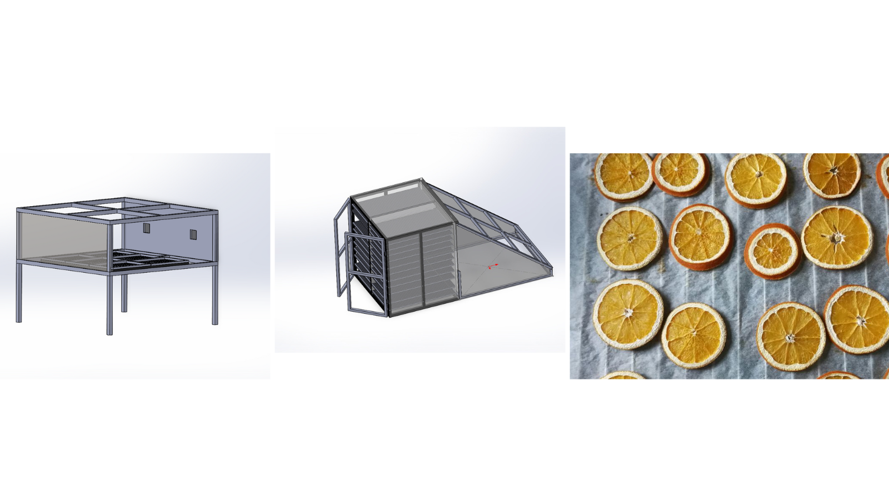
Industrial Fruit Drying
Large-scale drying with temperature, humidity, and airflow sensing, plus computer vision that flags spoiled fruit during the run.
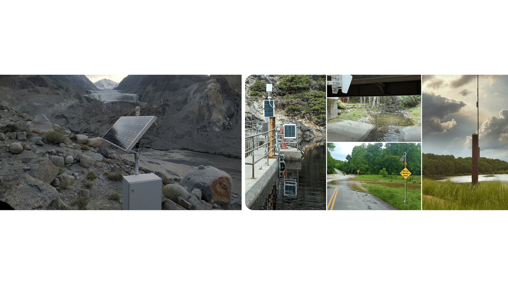
Early Flood Prediction & Alerts
Flood alerts from water-level sensing, flow, and computer vision, tuned for conditions in the Swat region so warnings go out before the water arrives.
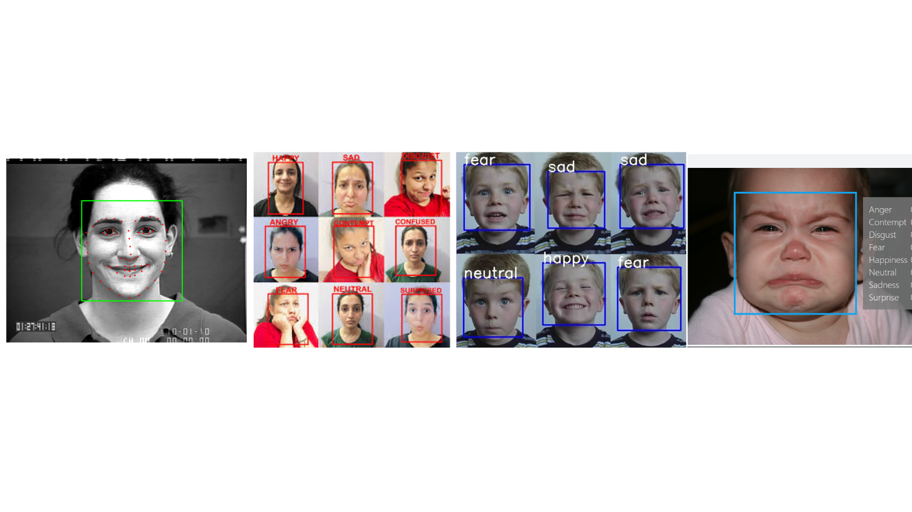
Face Emotion Recognition
Emotion from face and speech with ResNet50 and MobileNetV2: happy, sad, surprise, and fear, in real time.
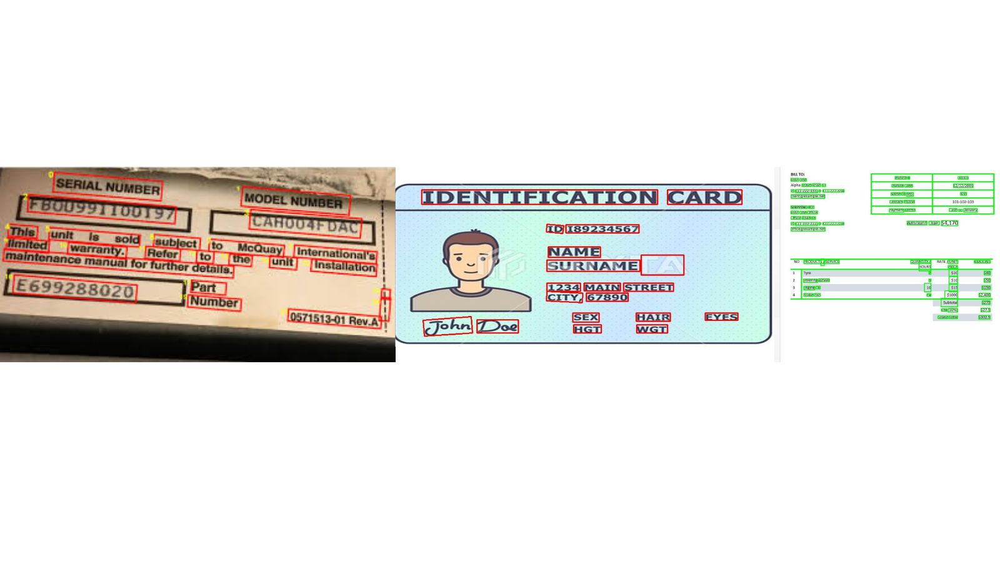
OCR with Bounding Boxes
Line-level boxes on scanned pages, then recognition, so printed and handwritten text can be located and read. The same OCR path feeds E-checking.
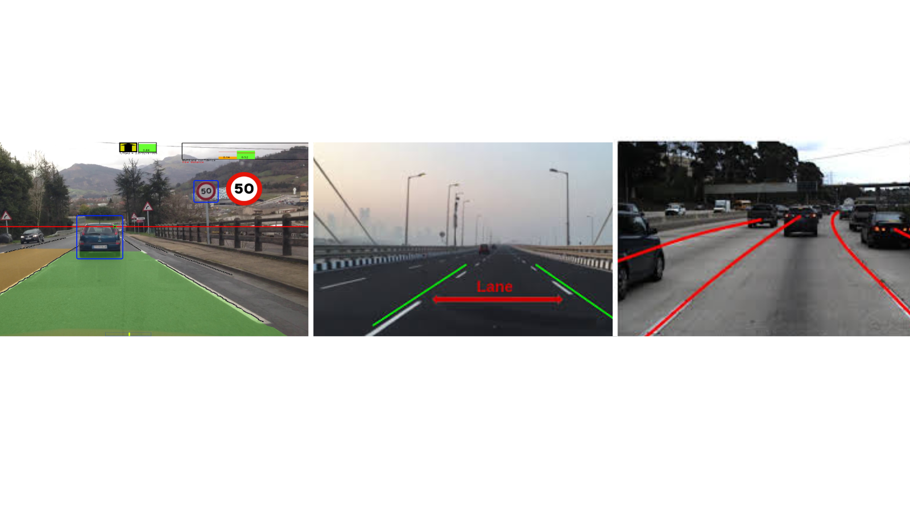
Lane Detection
Real-time lane lines for driver assistance, using edges, Hough transforms, and polynomial fits across changing road conditions.
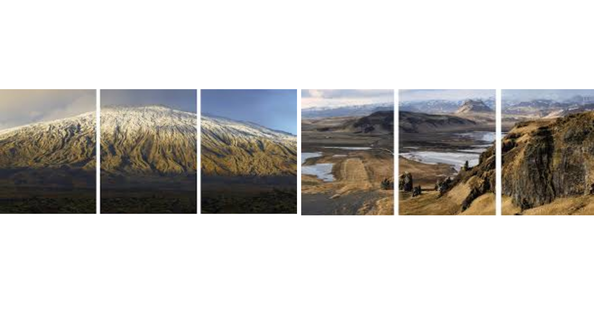
Image Stitching
Overlapping photos stitched into a panorama with feature matching, homography, and blending.
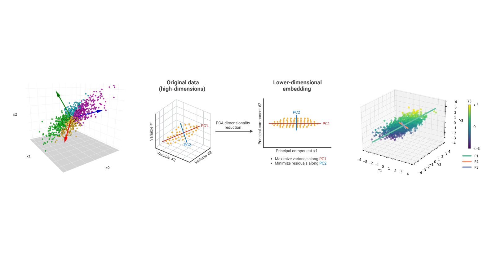
Principal Component Analysis
PCA for dimensionality reduction and feature extraction, keeping the variance that later models actually use.